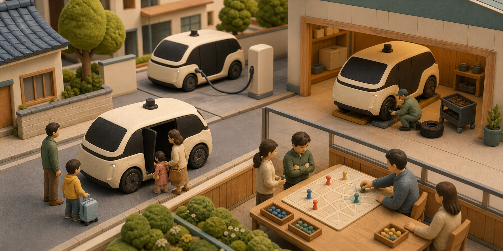

중국 Pony.ai, 로보택시 매출 1년 새 8배…차량 1,975대로 늘렸지만 4,540만 달러 적자
중국 자율주행 기업 Pony.ai의 2026년 2분기 로보택시 매출이 1,210만 달러로, 1년 전보다 691.2% 늘었다. 세계에서 운영하는 로보택시도 1,975대로 커졌다. 돈을 내고 타는 승객이 빠르게 늘었다는 뜻이지만 회사는 같은 분기에 4,540만 달러 순손실을 냈다. 이제 로보택시 경쟁은 “차가 혼자 달릴 수 있나”보다 “차량 한 대를 안전하게 자주 운행해 실제로 이익을 낼 수 있나”를 확인하는 단계에 들어갔다.

Pony.ai가 8월 18일 미국 증권거래위원회에 제출한 6-K 첨부 자료에 따르면 2026년 2분기 전체 매출은 3,620만 달러였다. 1년 전 2,150만 달러에서 68.8% 늘었다. 다만 회사가 작성한 미감사 실적이라 외부 감사가 끝난 확정 결산과는 구분해야 한다.
가장 크게 변한 항목은 로보택시 서비스다. 매출이 전년 동기 150만 달러에서 1,210만 달러로 늘었다. 증가율은 691.2%다. 회사는 실제 요금을 받은 운행에서 생긴 매출이 849.3% 증가했다고 밝혔다. 연구용 시험 주행보다 실제 요금을 받는 운행에서 번 돈이 크게 늘었다.
회사 전체 매출이 로보택시 하나에서 나온 것은 아니다. 로보트럭 서비스는 1,330만 달러로 40.0% 늘었다. 자율주행 도메인 컨트롤러, 즉 차량에서 자율주행 계산을 맡는 장치 등을 포함한 지능형 솔루션 매출은 1,080만 달러로 전년 1,040만 달러와 비슷했다. 아래에 나오는 매출총이익률은 매출에서 운행·서비스의 직접 비용을 빼고 남은 비율이다. 앞으로 반복 운행 서비스가 장비 판매보다 더 큰 사업이 되는지가 관건이다.
2분기 숫자에서 보이는 상용화의 속도
직전 분기와 비교 가능한 지표를 나란히 놓되, 차량 수는 1분기 ‘1,700대 초과’라는 회사 표현을 그대로 유지했다.
주의: 높은 전년 증가율은 로보택시 매출의 기저가 150만 달러로 작았던 영향도 크다. 성장률과 절대 규모를 함께 봐야 한다.
691.2% 성장의 출발점은 150만 달러였다
691.2%라는 증가율만 보면 이미 큰 사업처럼 보이지만, 지난해 2분기 출발점은 150만 달러였다. 올해 1,210만 달러까지 커진 변화는 분명하다. 그래도 세계 차량 1,975대가 모두 석 달 내내 같은 방식으로 돈을 받고 달렸다고 볼 수는 없다. 시험 차량과 상용 차량, 회사가 직접 운영하는 차와 파트너가 배치한 차가 섞여 있다.
따라서 공개된 차량 수로 매출을 단순히 나눠 “차 한 대가 얼마를 벌었다”고 계산하면 틀릴 수 있다. 분기 중간에 추가된 차는 석 달을 모두 달리지 않았다. 도시마다 허가 구역, 영업 시간, 안전요원 조건과 요금도 다르다.
직전 분기와 비교해도 성장은 확인된다. 1분기 로보택시 매출은 860만 달러였고 2분기는 1,210만 달러였다. 약 41% 늘었다. 작은 출발점 때문에 전년 증가율이 크게 보이는 효과를 빼더라도, 유료 운행은 분기 사이에 확대됐다.
매출에서 직접 운행·서비스 비용을 뺀 비율인 매출총이익률은 전년 16.1%, 직전 분기 16.2%에서 이번 분기 17.5%로 올랐다. 회사는 파트너와 차량·운영 자금을 나누는 공동 배치 모델과 로보택시 서비스의 비중이 커진 덕분이라고 설명했다. 다만 이 비율이 올랐다고 회사 전체가 이익을 냈다는 뜻은 아니다.
차량 1,975대가 모두 하루 종일 영업하는 것은 아니다
Pony.ai는 2분기 말 세계 로보택시 차량이 1,975대라고 밝혔다. 1분기의 ‘1,700대 초과’보다 늘었고, 연말에는 3,500대를 넘기겠다는 목표도 유지했다. 남은 반년 동안 최소 1,525대 이상을 더 넣어야 하는 일정이다.
중국에서는 베이징, 상하이, 광저우, 선전 같은 1선 도시가 핵심이다. 한 구역에 차를 촘촘히 배치하면 호출 대기시간이 줄어 이용자가 앱을 더 자주 열 수 있다. 회사는 중국 내 PonyPilot 등록 이용자가 150만 명을 넘었다고 밝혔다. 가입자가 모두 실제 승객은 아니지만 잠재 수요가 커졌다는 회사 지표다.
차를 늘리려면 큰돈이 먼저 든다. 2분기 설비투자는 3,220만 달러로 전년 같은 기간 960만 달러의 세 배를 넘었다. 회사는 7세대 로보택시 생산과 배치, 데이터센터와 서버 투자를 이유로 들었다. 앱 이용자만 늘리면 되는 사업과 달리 차량, 센서, 충전·정비와 원격 관제 시설에 계속 자금이 들어간다.
6월 말 현금과 단기투자, 제한 현금, 장기 자산관리 채무상품을 합친 보유액은 13억9,050만 달러였다. 3월 말 14억3,550만 달러에서 4,500만 달러 줄었다. 당장 돈이 바닥날 수준은 아니지만 차량을 빨리 늘릴수록 현금을 얼마나 효율적으로 쓰는지가 중요해진다.
PonyWorld 2.0은 새 도시를 배울 때 드는 비용을 줄이려는 AI다
로보택시 AI는 카메라 영상에서 차와 사람을 찾는 데서 끝나지 않는다. 주변 차량과 보행자가 다음에 어디로 움직일지 예상하고, 위험한 장면을 가상으로 만들어 연습한 뒤 실제 차의 운전 방식에 반영해야 한다. 도시가 늘면 도로 모양과 지역 규칙을 새로 익히는 비용도 커진다.
Pony.ai는 세계 모델 PonyWorld 2.0을 실제 운행 데이터와 컴퓨터가 만든 장면을 함께 학습하는 ‘물리 AI 엔진’이라고 설명한다. 세계 모델은 도로에서 다음에 벌어질 일을 미리 그려 보는 AI라고 이해하면 쉽다. 회사 설명대로라면 한 도시에서 배운 내용을 다른 도시에 재사용해, 차가 늘 때마다 엔지니어도 같은 비율로 늘어나는 문제를 줄일 수 있다.
2분기 발표에서 CTO도 PonyWorld 2.0 덕분에 여러 국가와 도시에 동시에 차를 넣으면서 엔지니어 수를 같은 비율로 늘리지 않아도 된다고 말했다. 그러나 이것은 회사의 주장이다. 도시별 사람 개입 횟수, 원격지원 인원과 안전 관련 운행거리 같은 외부 검증 지표가 나와야 실제 비용 절감 효과를 알 수 있다.
이 AI의 실력은 자주 만나는 평범한 도로보다 드문 상황에서 드러난다. 공사 구간, 갑자기 뛰어드는 보행자, 특이한 교차로와 악천후를 가상 장면으로 얼마나 잘 만들고 실제 운전에 옮기는지가 중요하다. 컴퓨터 속 시험을 잘 통과했다는 사실만으로 공공도로 안전이 증명되지는 않는다.
유럽 2,000대 계약은 지금 달리는 2,000대가 아니다
Pony.ai는 Uber와 유럽에 2,000대가 넘는 로보택시를 배치하는 계약을 확보했다고 밝혔다. 국제 시장에서 협의하거나 계약한 차량은 4,000대를 넘는다고도 설명했다. 이 미래 물량은 2분기 말 실제 차량 1,975대와 같은 숫자가 아니다.
Cinco Días는 8월 14일 양사가 자그레브에서 시작한 협력을 유럽 네 개 도시로 넓힐 계획이라고 보도했다. 나머지 도시 이름과 전체 일정은 아직 공개되지 않았다. ‘계약 2,000대’를 ‘현재 무인 영업 중인 2,000대’로 읽으면 안 된다.
Uber가 공개한 자그레브 사업 구조를 보면 Pony.ai는 자율주행 기술을, 현지 사업자 Verne는 차량 보유와 운영을, Uber는 호출 앱을 맡는다. 한 회사가 차량과 현지 영업망을 모두 마련하는 것보다 투자 부담을 나눌 수 있다.
대신 세 회사가 수익도 나눠야 하고 사고 때 책임을 가리기 복잡해진다. 사고 조사, 지도·영상 보관, 원격지원, 보험과 정비를 누가 맡는지도 나라별로 달라진다. 유럽 확장이 실제 이익률을 높일지는 차가 배치된 뒤에야 알 수 있다.
매출은 빨리 늘었지만 4,540만 달러 적자는 남았다
2분기 매출총이익은 640만 달러로 전년 350만 달러보다 83.4% 늘었다. 그러나 모든 비용을 반영한 순손실은 4,540만 달러였다. 전년 같은 기간 5,330만 달러보다 14.9% 줄었지만, 매출총이익보다 손실 규모가 훨씬 크다.
회사는 주식보상과 일부 평가손익을 뺀 비일반회계기준 운영비가 6,300만 달러로 9.6% 늘어 매출보다 천천히 증가했다고 설명한다. 회사의 조정 기준으로는 비용 증가율이 매출 증가율보다 낮았다. 하지만 제외한 항목이 있는 숫자이므로 일반회계기준 손실과 실제 현금의 움직임을 함께 봐야 한다.
순손실이 줄어든 데에는 거래증권 가격 상승 같은 일회성 금융 항목도 영향을 줬다. 자율주행 영업 자체가 같은 만큼 좋아졌다고 단정할 수 없다. 영업손실, 한 번 운행할 때 남는 돈과 차량 가동률이 여러 분기 연속 나아지는지 확인해야 한다.
차량 수보다 어려운 ‘경제성의 연결 고리’
상용화는 차량을 늘리는 한 단계로 끝나지 않는다. 네 지표가 함께 좋아져야 지속 가능한 서비스가 된다.
호출 빈도, 재이용률과 실제 탑승 전환율은 별도로 확인해야 한다.
시범 주행이 아니라 유료 이용이 늘었지만 도시별 운행량은 공개되지 않았다.
연말 3,500대 목표에는 양산, 허가, 정비와 원격 운영 인력이 모두 필요하다.
매출총이익률은 개선됐지만 순이익과 잉여현금흐름 흑자에는 아직 거리가 있다.
연결이 끊기는 지점이 핵심이다. 이용자가 늘어도 차량 가동률이 낮거나, 운행이 늘수록 안전·정비·원격지원 비용이 같이 커지면 규모의 경제가 늦어진다.
차 한 대가 실제로 얼마를 버는지는 아직 알 수 없다
먼저 유료 운행 횟수와 거리가 공개되지 않았다. 요금 매출 증가만으로는 가격이 올랐는지, 운행이 늘었는지, 차가 많아졌는지를 나눌 수 없다. 도시별 호출 수, 재이용률, 차량당 유료 영업 시간과 승객 없이 달린 비율이 필요하다.
안전 정보도 사고 건수 하나로는 부족하다. 사람이 원격이나 현장에서 개입한 횟수, 심한 급정거, 허가된 운행 조건을 벗어난 사례와 신고 대상 충돌을 같은 기준으로 공개해야 경쟁사와 비교할 수 있다.
7세대 차량 한 대를 만드는 비용, 센서 교체, 청소·충전·보험, 지도 갱신과 원격관제 인건비도 공개되지 않았다. 매출총이익률이 17.5%로 올라도 새 차에 들어가는 자금이 너무 크면 투자금을 되찾는 데 오래 걸린다.
마지막은 허가 속도다. 1,975대가 있다고 모든 차가 같은 도시에서 24시간 돈을 받고 달릴 수 있는 것은 아니다. 규제가 허용한 구역과 시간이 실제 영업 규모를 제한한다. 해외 계약도 각 지역의 데이터·안전 규정을 통과해야 서비스가 된다.
한국도 기술 회사·호출 앱·차량 운영사가 나눠 맡을 수 있다
Pony.ai, Uber와 현지 운영사가 기술·호출·차량을 나눠 맡는 구조는 완성차 회사 한 곳이 모든 것을 소유할 필요가 없다는 사례다. 한국에서도 자율주행 소프트웨어 회사, 택시 플랫폼, 차량 운영사와 보험사가 역할을 나누는 사업이 가능하다.
대신 카메라와 라이다가 모은 도로·보행자 정보, 지도 갱신과 원격 개입 기록이 어느 나라 서버로 가는지 계약에 적어야 한다. 외국 자율주행 시스템을 들여올 때는 개인정보의 국외 이전과 사고 조사 자료에 접근할 권리가 핵심이 된다.
개발자는 AI 모델의 정확도만 볼 수 없다. 가상 도로 장면 만들기, 실제·합성 데이터 추적, 차량 소프트웨어 업데이트, 실패 재현과 안전 사례 문서화가 한 체계로 이어져야 한다. 웹 서비스의 AI보다 훨씬 긴 검증 과정이다.
정책 당국도 차량 대수보다 비교 가능한 운영 정보를 요구할 필요가 있다. 유료 운행거리, 사람 개입, 충돌의 심각도, 원격지원, 운행 구역과 신고 기준을 통일해야 회사의 성장 홍보와 실제 안전·경제성을 나눠 볼 수 있다.
다음 실적에서는 차량·운행 수익·현금을 함께 보면 된다
연말 3,500대 목표는 공장에서 나온 차량, 상용 허가를 받은 차량과 실제 유료 운행을 시작한 차량으로 나눠 볼 필요가 있다. 유럽 2,000대 계약도 도시와 시작 시점, 안전요원 조건이 공개되는지가 중요하다.
회사 전체 이익률보다 로보택시 한 대의 매출과 비용이 더 많은 것을 알려 준다. 차량당 매출, 파트너 배치 수수료, 정비·보험·원격지원 비용이 나와야 공동 운영 방식이 돈을 남기는지 알 수 있다.
현금도 함께 본다. 보유 자금은 크지만 2분기 설비투자도 급증했다. 영업에서 빠져나가는 현금이 줄고, 새 차량이 일정 기간 안에 투자비를 되돌려 주는지가 사업의 지속 가능성을 가른다.
이번 실적은 중국 로보택시가 승리했다는 선언이 아니라 더 어려운 시험의 시작이다. 스스로 달리는 기술은 이미 여러 번 보여 줬다. 이제는 안전하게 달린 거리, 돈을 낸 승객과 차량 한 대가 남기는 수익, 장애와 사고를 견디는 운영 능력으로 증명해야 한다.